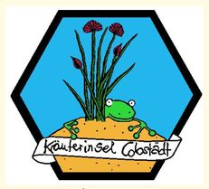

Herzlich Willkommen!!!
Wir sind die Kräuterinsel Cobstädt. Eine junger Gärtnereibetrieb im schönen Cobstädt, welcher ab April 2017 seine Tore für euch öffnet.
In unserem Sortiment von bisher mehr als 350 verschiedener Pflanzen soll für jeden Geschmack etwas dabei sein.
Essbaren Blüten, Bauerngartenstauden, Gemüse- und Obstraritäten, Heimische Arznei-, Färber und Zauberpflanzen,
Kräuter für die regionale, mediterrane- oder auch weltweite Küche.

Transportiert ein Stück Urlaub in den Alltag und genießt das einladende Ambiente der Gärtnerei.
Erlebt hier die Pflanzenwelt mit all euren Sinnen: Wir riechen, schmecken, fühen, sehen, erleben...
Und ja, wir wollen euch den Wunsch nach gesunden, naturnah produzierten Pflanzen erfüllen,
daher produzieren wir weitesstgehend nach Eu-Ökorichtlinien, auch wenn wir momentan noch keine Bio zertifizierte Unternehmung sind, aber das ist nur eine Frage der Zeit.
So setzen wir auf umweltfreundlichen Pflanzenschutz und organische Dünger.
Unsere Topferde ist ein torfreies und somit ressourcenschonendes Bio-Substrat auf Rindenkompostbasis.
Wir produzieren alle Pflanzen nachvollziehbar vor Ort in der Gärtnerei und geben unseren Pflanzen Zeit und Raum zum wachsen.
Wir begleiten sie vom kleinen Sämling oder Steckling und lassen sie unter möglichst unter natürlichen Umständen heranwachsen,
bis wir das Gefühl haben eine qualitativ hochwertige Pflanze geschaffen zu haben,
welcher wir dann verhelfen den Schritt in die Welt zu gehen.
Wir wollen dabei unseren Kunden durch Anwendungs- und Pflegehinweise nötige Tipps und Tricks mit auf den Weg geben, um sich mit ihren erworbenen Pflanzen besser anzufreunden.
Wir wollen ihre kulinarischen, medizinischen oder kulturhistorischen Geschichten erzählen
Unsere Pflanzen sollen kein isolietes Produkt sein und unsere Arbeit mit den Pflanzen ist wohl mehr als Dienstleistung zu verstehen.
Wer gute Qualität und Beratung zu schätzen weiß und nicht dem billigsten Preis hinterher jagt wird sich bei uns wohl fühlen,
denn gute Qualität und Beratung gibt es nicht zu Schleuderpreisen wie im Discounter.
Bei Pflanzen sind Qualitätsunterschiede eine Frage der Zeit, so investiert man ja auch in ihr Leben und nicht nur in dem Moment des Kaufes.
Ohne chemischen Pflanzenschutzmittel, mineralischen Dünger oder massenhaft zusätzlicher Energie
sind unsere Pflanzen einfach abgehärteter, widerstandsfähiger, gesünder und nachhaltiger als hochgetriebene Massenware.
Das ist unser hoher Anspruch!!!

Wir begrüßen Sie auf der Kräuterinsel Cobstädt
Wir wünschen Ihnen viel Spaß beim Einkauf